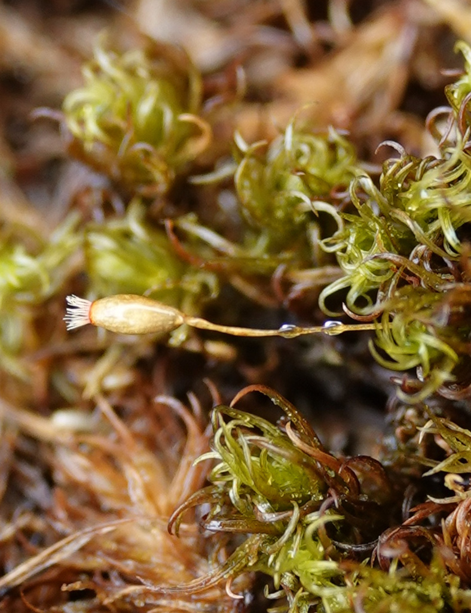

Ptychomitriaceae
Ptychomitrium Moss Family
Ptychomitriaceae is a family of acrocarpous mosses that typically form dense cushions or tufts, primarily found on rock surfaces (epilithic), especially non-calcareous rock, and occasionally on soil at the base of rocks. They are characterized by leaves that are often strongly crisped or curled when dry, erect capsules borne on relatively long setae, and distinctive large, plicate (pleated) calyptrae that cover most of the capsule.
Overview
The Ptychomitriaceae family belongs to the order Grimmiales, alongside the Grimmiaceae and Seligeriaceae. It is a relatively small family with about 5-7 genera (including Ptychomitrium, Campylostelium, Glyphomitrium) and approximately 50 species. These mosses have a cosmopolitan distribution, found in temperate and mountainous regions across the globe.
Members of this family are typically rock-dwelling cushion mosses. They are recognized by their acrocarpous habit, lanceolate leaves that become strongly crisped, curled, or contorted upon drying, and erect, symmetrical capsules borne on elongated setae. The large, mitrate or campanulate calyptra, which is characteristically strongly pleated and covers most of the capsule, is a key diagnostic feature. The peristome is single, consisting of 16 teeth that are often deeply divided into filiform segments.
Ecologically, Ptychomitriaceae are important colonists of exposed or shaded rock surfaces, contributing to primary succession and soil formation in these habitats. Their ability to tolerate desiccation, indicated by the leaf crisping, allows them to thrive on rock faces subject to drying.
Quick Facts
- Scientific Name: Ptychomitriaceae
- Common Name: Ptychomitrium Moss Family
- Number of Genera: Approximately 5-7
- Number of Species: Approximately 50
- Distribution: Cosmopolitan, especially temperate and montane regions.
- Evolutionary Group: Bryophytes - Mosses - Grimmiales
Key Characteristics (Moss Morphology)
Gametophyte: Growth Form and Habit
Plants are acrocarpous, typically forming dense, often dark green to blackish cushions or tufts, sometimes extensive. Stems are erect, usually branched.
Gametophyte: Stems
Stems are relatively wiry. A central strand is usually present.
Gametophyte: Leaves
Leaves are crowded, typically erect-spreading to spreading when moist, becoming strongly crisped, curled, or contorted when dry. They are usually lanceolate to linear-lanceolate from an ovate or oblong base, often keeled. Leaf apices are typically acute or acuminate. Margins are usually plane or recurved below, often entire or serrulate near the apex. The costa is single and strong, usually ending just below the apex or percurrent. Leaf cells are typically small, dense, quadrate to short-rectangular, often thick-walled, and usually smooth or sometimes slightly papillose.
Sporophyte: Seta, Capsule, Calyptra, and Peristome
Sexual condition is typically autoicous. The seta is usually elongated, straight or somewhat curved, smooth. The capsule is exserted, typically erect and symmetrical, ovoid to cylindric, usually smooth or lightly ribbed when dry. The operculum is typically rostrate (beaked). The calyptra is large, conspicuous, covering most or all of the capsule, typically conic-mitrate or campanulate, characteristically strongly plicate (pleated), and naked (not hairy). The peristome is single (haplolepidous type, despite being in the diplolepidous Grimmiales), consisting of 16 lanceolate teeth that are typically deeply divided almost to the base into 2(-3) filiform, papillose segments.
Field Identification (Mosses)
Identifying Ptychomitriaceae relies on recognizing the cushion habit on rock, crisped leaves, and the distinctive calyptra:
Primary Identification Features (Field/Hand Lens)
- Habit: Acrocarpous cushions or tufts, primarily on rock.
- Crisped Leaves When Dry: Leaves become strongly curled, crisped, or contorted when the plant dries out.
- Long, Pleated Calyptra: Look for large, distinctly pleated (longitudinally folded) calyptrae covering the erect capsules (if fertile). Calyptra is not hairy.
- Habitat: Typically on non-calcareous rock surfaces (granite, sandstone, etc.), sometimes soil at base of rocks.
- Erect Capsules on Long Setae: Capsules held well above the cushion on straight or slightly curved stalks.
Secondary Identification Features (Microscope often needed)
- Cell Shape: Confirm small, quadrate to short-rectangular, thick-walled upper leaf cells.
- Costa Structure: Strong single costa ending near the apex.
- Peristome Structure: Single peristome of 16 teeth deeply divided into filiform segments (requires mature, open capsules).
Common Confusion Points (Other Mosses)
- Grimmiaceae (Grimmia, Racomitrium): Also common rock-dwelling cushion mosses, but leaves are typically not strongly crisped when dry (though sometimes contorted), often possess hair points, have different cell structures (often sinuose walls), and different peristomes or immersed capsules. Calyptrae are small and smooth.
- Orthotrichaceae (Orthotrichum, Ulota): Some grow on rock and form cushions. Ulota has crisped leaves, but Orthotrichaceae typically have immersed or shortly exserted capsules (except Ulota), often ribbed capsules, double (though variable) peristomes, and frequently hairy calyptrae.
- Dicranaceae (Dicranoweisia, Oncophorus): Some form cushions on rock and have crisped leaves, but possess different peristomes (dicranoid, forked teeth) and often different cell shapes.
- Rhabdoweisiaceae (Rhabdoweisia): Small cushion mosses on rock, often with crisped leaves, but have different peristome structure (often rudimentary teeth).
- Pottiaceae (Weissia, Tortella): Some form cushions with crisped leaves, but often prefer soil or calcareous rock, have different costa structures, papillose cells, and different peristomes (often absent, rudimentary, or filamentous).
Field Guide Quick Reference (Mosses)
Look For:
- Acrocarpous cushions/tufts on rock
- Leaves strongly crisped/curled when dry
- Erect capsules on elongated setae
- Large, pleated, non-hairy calyptra covering capsule
- Strong single costa
Key Variations:
- Cushion size and density
- Degree of leaf crisping
- Calyptra shape (mitrate vs. campanulate)
- Peristome teeth division
Notable Genera
Key genera in the Ptychomitriaceae family include:

Ptychomitrium
(Genus)
The largest and type genus. Forms dense cushions on rock. Characterized by lanceolate leaves strongly crisped when dry, erect capsules on long setae, deeply divided peristome teeth, and long, pleated, mitrate calyptrae. Common worldwide in suitable habitats.

Campylostelium
(Genus)
Small mosses forming tufts on acidic rock. Similar to Ptychomitrium but often distinguished by a curved seta (hence the name) and sometimes less deeply divided peristome teeth. Calyptra is plicate and mitrate.

Glyphomitrium
(Genus)
Forms small, dense, dark cushions on rock, often coastal or montane. Leaves ovate-lanceolate, crisped when dry. Distinguished by its campanulate (bell-shaped), lobed, plicate calyptra and peristome teeth that are often fused in pairs at the base.
Phylogeny and Classification
Ptychomitriaceae is classified within the order Grimmiales, class Bryopsida, alongside the families Grimmiaceae and Seligeriaceae. This order primarily consists of acrocarpous mosses adapted to epilithic (rock-dwelling) habitats.
Molecular studies confirm the placement of Ptychomitriaceae within Grimmiales. It is distinguished from Grimmiaceae by its generally non-awned leaves, different leaf cell structure (less often sinuose), single peristome with deeply divided teeth, and the large, plicate calyptra. It differs from Seligeriaceae in its much larger size, crisped leaves, elongated seta, and peristome structure. The family represents a distinct lineage specializing in rock colonization, with characteristic adaptations like desiccation-induced leaf crisping and protective calyptrae.
Position in Plant Phylogeny
- Kingdom: Plantae
- Division: Bryophyta (Mosses)
- Class: Bryopsida
- Order: Grimmiales
- Family: Ptychomitriaceae
Evolutionary Significance
The Ptychomitriaceae family is significant for:
- Epilithic Adaptation: Represents a key lineage within the rock-specialist order Grimmiales.
- Desiccation Response: The pronounced leaf crisping upon drying is a characteristic desiccation tolerance mechanism.
- Calyptra Evolution: The large, strongly pleated calyptra is a distinctive feature, likely providing significant protection to the developing sporophyte.
- Peristome Structure: Exhibits a specific type of single peristome with deeply divided teeth, contributing to the understanding of peristome evolution within diplolepidous mosses.